Snakes of Uruguay
35 snake species are recorded in Uruguay in SnakeList: 7 venomous and 28 non-venomous, from 6 families.
- 35species
- 7venomous
- 28non-venomous
- 6families
These totals count the snakes SnakeList records as living in Uruguay. A species counts if it is recorded anywhere in the country, so not every snake lives in every region.
Species
Showing 35 species
 Almaden Ground SnakeErythrolamprus almadensis
Almaden Ground SnakeErythrolamprus almadensis Amazon False Coral SnakeOxyrhopus rhombifer
Amazon False Coral SnakeOxyrhopus rhombifer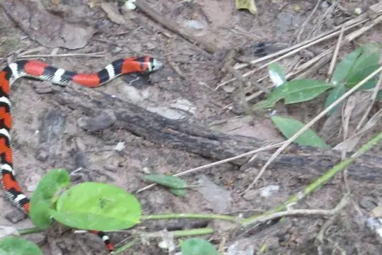
Banded Hognose SnakeXenodon pulcher Bolivian Tree SnakeDipsas turgida
Bolivian Tree SnakeDipsas turgida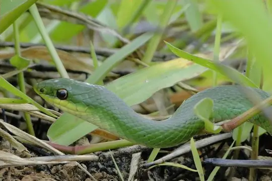
Brazilian Green RacerPhilodryas aestiva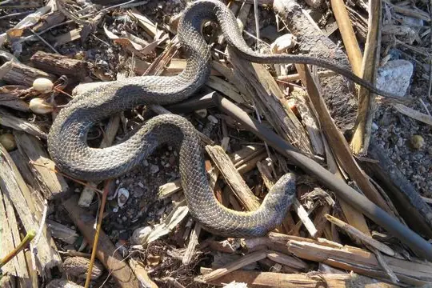
Brazilian KeelbackHelicops infrataeniatus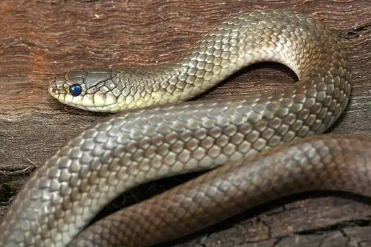
Burrowing Night SnakePhilodryas agassizii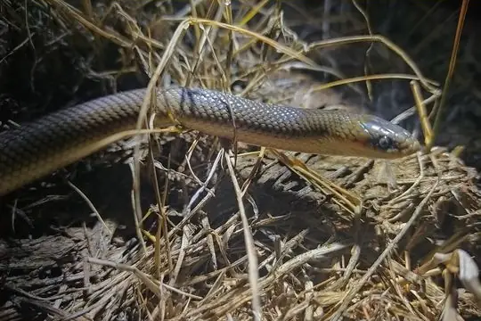
CulebraParaphimophis rusticus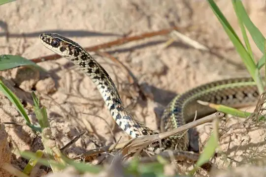
Fronted Ground SnakeLygophis flavifrenatus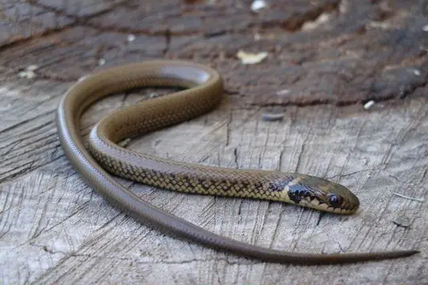
Golden LiophisErythrolamprus semiaureus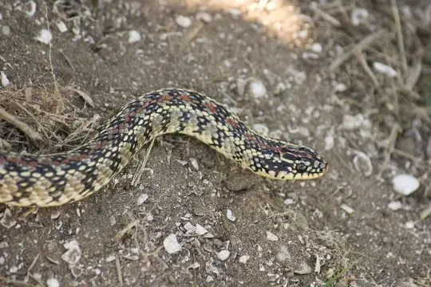
Golden-belly snakeLygophis anomalus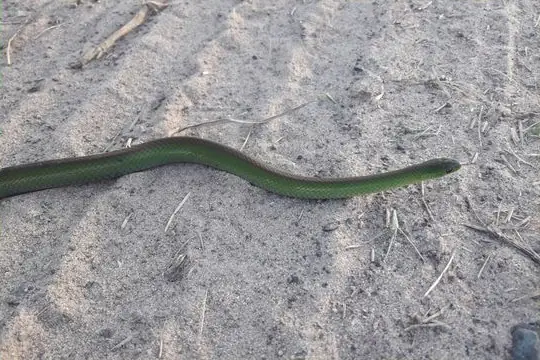
Jaeger's Ground SnakeErythrolamprus jaegeri- No photo yetJan's Hognose SnakeXenodon histricus
 Lichtenstein's Green RacerPhilodryas olfersii
Lichtenstein's Green RacerPhilodryas olfersii Military Ground SnakeErythrolamprus miliaris
Military Ground SnakeErythrolamprus miliaris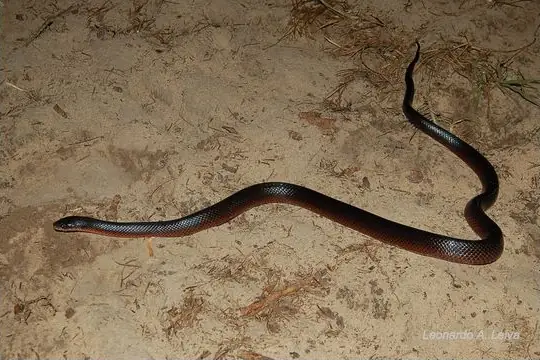
Mussurana (maculata)Boiruna maculata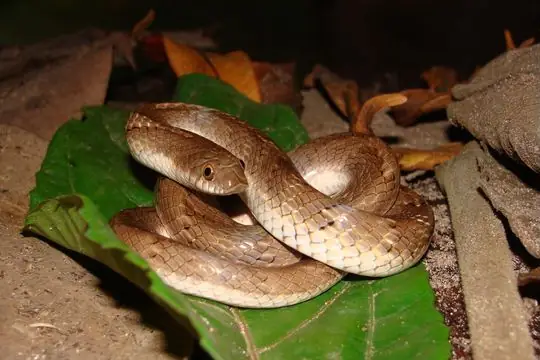
Natterer's Hognose SnakeXenodon nattereri- No photo yetOcellated Pampas SnakeTomodon ocellatus
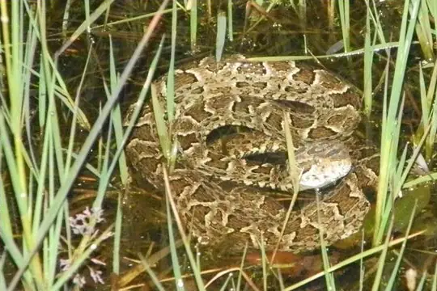
Pampas LanceheadBothrops pubescens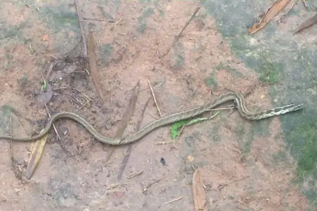
Pampas SnakeTomodon dorsatus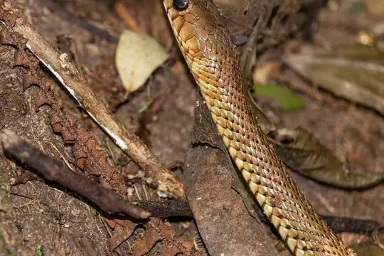
Patagonia Green RacerPhilodryas patagoniensis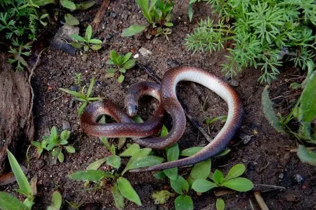
Reticulate Ground SnakeAtractus reticulatus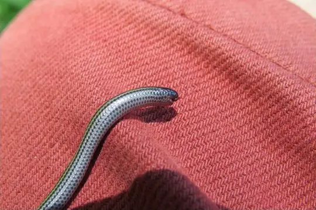
Rio Grande do Sul Blind SnakeEpictia munoai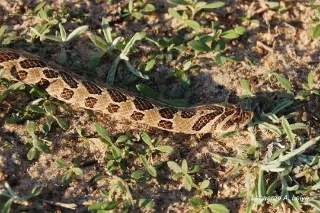
South American Hognose SnakeXenodon dorbignyi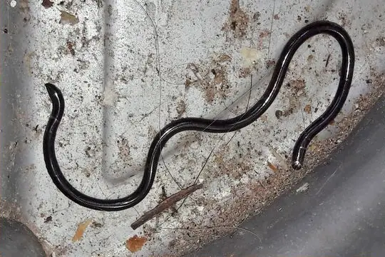
Ternetz's Blind SnakeLiotyphlops ternetzii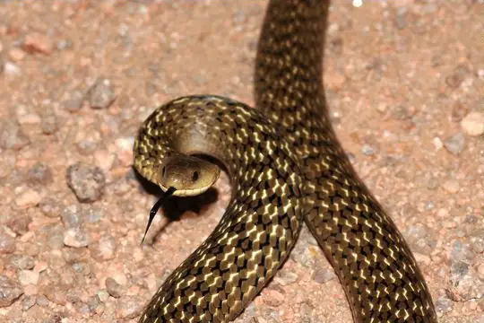
Tropical Forest SnakeCalamodontophis paucidens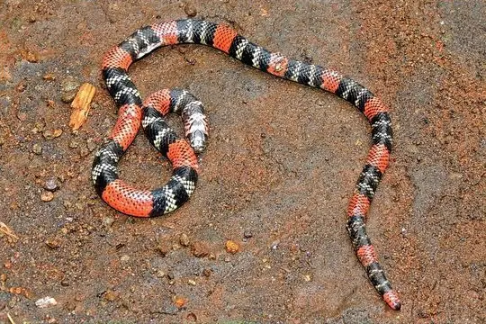
Uruguayan coralsnakeMicrurus altirostris Uruguayan SipoChironius gouveai
Uruguayan SipoChironius gouveai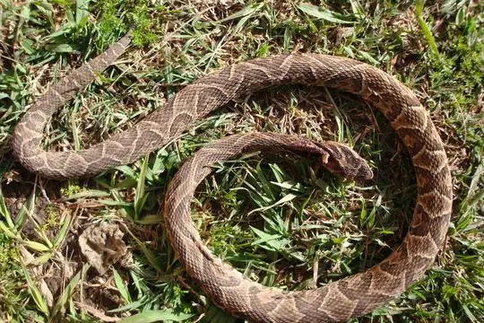
UrutuBothrops alternatus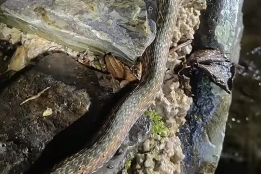
Wagler's SnakeXenodon merremii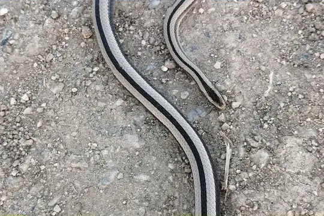
Wide Ground SnakePsomophis obtusus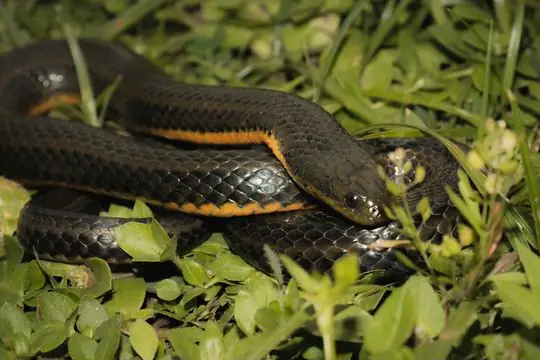
Wied's KeelbackHelicops carinicaudus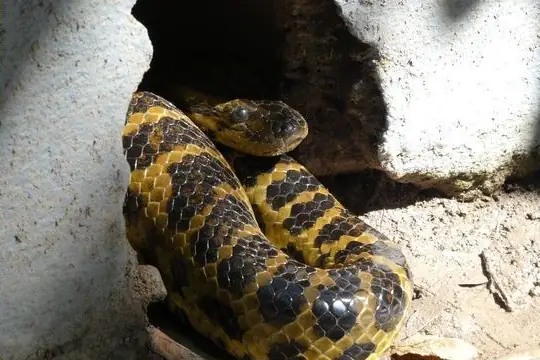
Yellow AnacondaEunectes notaeus Yellow-bellied SnakeErythrolamprus poecilogyrus
Yellow-bellied SnakeErythrolamprus poecilogyrus- No photo yetColuber alternans
No snakes in Uruguay match.
Uruguay’s snakes in numbers
- Families: Colubridae 29, Viperidae 2, Anomalepididae 1, Boidae 1, Elapidae 1, Leptotyphlopidae 1.
States and provinces
The states and provinces where SnakeList records snakes, with how many species each has. Each page has its families, venomous snakes, the species found only there, its cities and neighbours.
- Artigas 14 species
- Canelones 9 species
- Cerro Largo 11 species
- Colonia 7 species
- Durazno 1 species
- Flores 4 species
- Florida 5 species
- Lavalleja 6 species
- Maldonado 11 species
- Montevideo 2 species
- Paysandú 9 species
- Río Negro 6 species
- Rivera 5 species
- Rocha 14 species
- Salto 7 species
- San José 9 species
- Soriano 3 species
- Tacuarembó 6 species
- Treinta y Tres 5 species
No place matches that.
Cities
Its biggest cities, biggest first. Snakes are recorded by state or province, not by city, so each city page shows the snakes of the state or province it is in.
- Montevideo Montevideo
No place matches that.